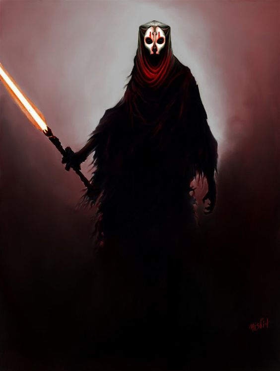

Imperium Sithów
"Jest Raną w Mocy, bardziej obecnością niż ciałem, a na jego przebudzenie życie umiera... poświęcając się jego głodowi."
-Visas Marr
Jest to strona w całości poświęcona antagonistom, spektrum Gwiezdnych Wojen, czyli Sithom. Począwszy od kredo, a zakończywszy na Dark Lordach, dowiesz się tu o wszystkich informacjach na temat tego wspaniałego zgromadzenia i opozycji do Zakonu Jedi i Republiki.
Strona ta powstała na potrzeby zaliczenia przedmiotu "SSW".
Przejdź na Ciemną Stronę Mocy - Mamy ciasteczka!